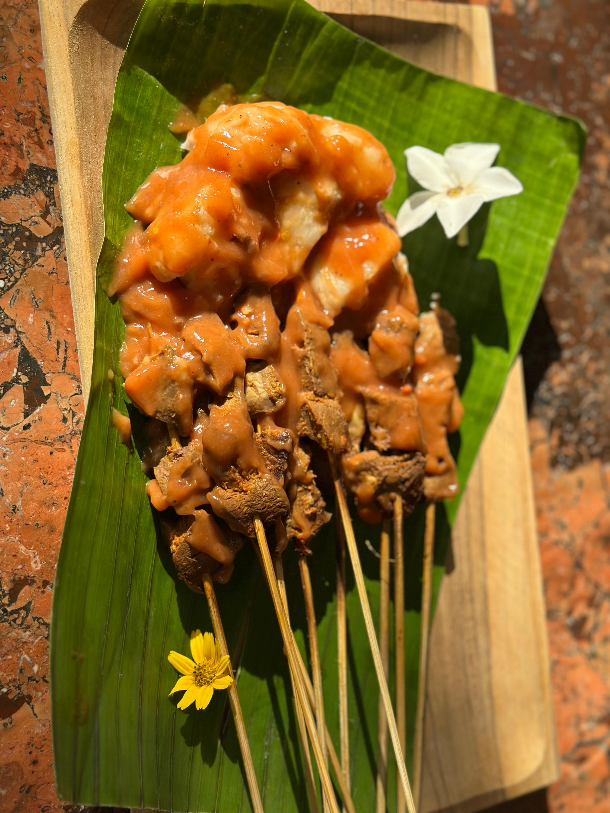
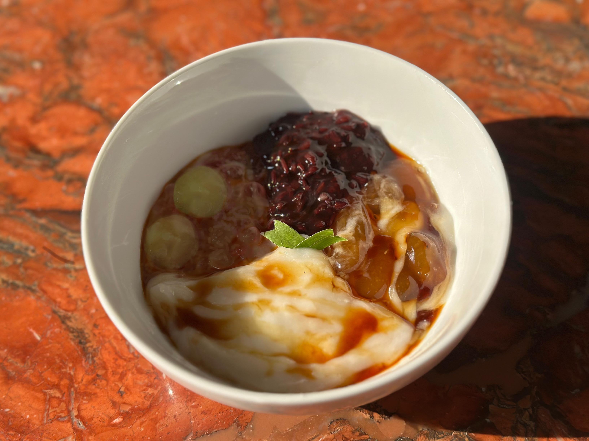
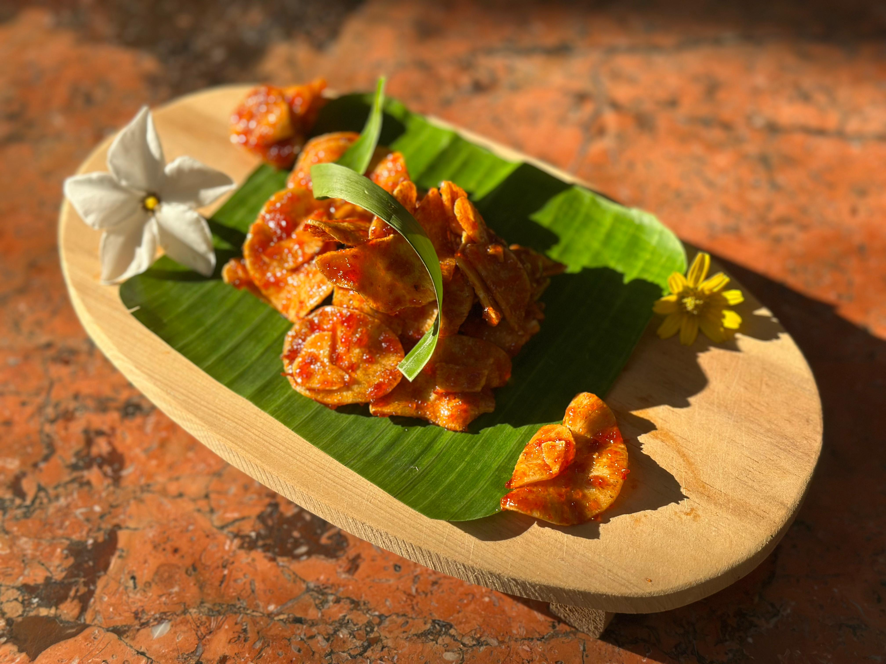

Menu Kami

Sate Padang
Potongan daging empuk disiram kuah kental khas Padang yang kaya rempah.
30.000

Lontong Sayur
Lontong dan sayur yang menyegarkan berpadu dengan kentalnya kuah santan yang gurih nikmat.
20.000

Es Tebak
Minuman segar manis dengan isian tebak, tape, kolang-kaling dan cincau hitam.
15.000

Es Durian
Perpaduan es serut dengan durian lokal khas Ranah Minang yang diblender dan diberi susu kental manis.
15.000

bubur kampiun
Perpaduan bermacam bubur khas Minang dalam satu: bubur ketan hitam, bubur kacang hijau, bubur candil, kolak pisang, bubur sumsum dan serutan kelapa.
10.000

Keripik Sanjai
Keripik balado pedas manis khas Bukittinggi.
5.000